neuron in the 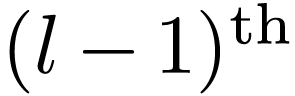 layer to the 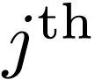
neuron in the 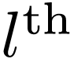 layer. Use 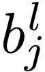
to denote the bias of the neuron in the layer.
neuron in the 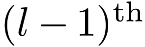 layer to the 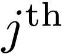
neuron in the 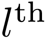 layer. Use 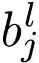
to denote the bias of the neuron in the layer.
|
Artificial intelligence (AI) research has tried many different approaches since its founding. In the first decades of the 21st century, highly mathematical statistical machine learning (ML) has dominated the field, and this technique has proved highly successful, helping to solve many challenging problems in real life.
Many problems in AI can be solved theoretically by searching through many possible solutions: Reasoning can be reduced to performing a search. Simple exhaustive searches are rarely sufficient for most real-world problems. The solution, for many problems, is to use "heuristics" or "rules of thumb" that prioritize choices in favor of those more likely to reach a goal. A very different kind of search came to prominence in the 1990s, based on the mathematical theory of optimization. Modern machine learning is based on these methods. Instead, of using detailed explanations to guide the search, it uses a combination of: (a) general architectures; (b) trying trillions of possibilities, guided by simple ideas (like gradient descent) for improvement; and (c) the ability to recognize progress.
I am interested in applying machine learning to problems in computational physics problems that traditional numerical methods can not easily handle either because of its computational costs being too high or its algorithms are too complicated to easily implement.
Enrico Fermi once criticized the complexity of a model (that contains many free parameters) by quoting Johnny von Neumann “With four parameters I can fit an elephant, and with five I can make him wiggle his trunk”.
What Fermi implies is that it is easy to fit existing data and what is importan is to have a model with predicting capability (fitting data not seen yet). The artificial neural network method tackles this difficulty by increasing the number of free parameters to millions, in the hope of obtaining predicting capability.
Neural networks consists of multiple layers of interconnected nodes (neurons), each having a weight for a connection, a bias and activation function. Each layer build upon the previous layer. This progression of computations through the network is called forward propagation. Another process called backpropagation uses algorithms which moves backwards through the layers to efficiently compute the partial derivatives of the loss function with respect to the weights and biases. Combining the forward and backward propagation, we can calculate errors in predictions and then adjusts the weights and biases using the gradient descent method. This process is called trainning.
As is shown in Fig. 1, we use 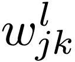 to
denote the weight for the connection from the
neuron in the 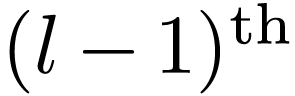 layer to the 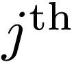
neuron in the 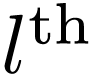 layer. Use 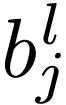
to denote the bias of the neuron in the layer.
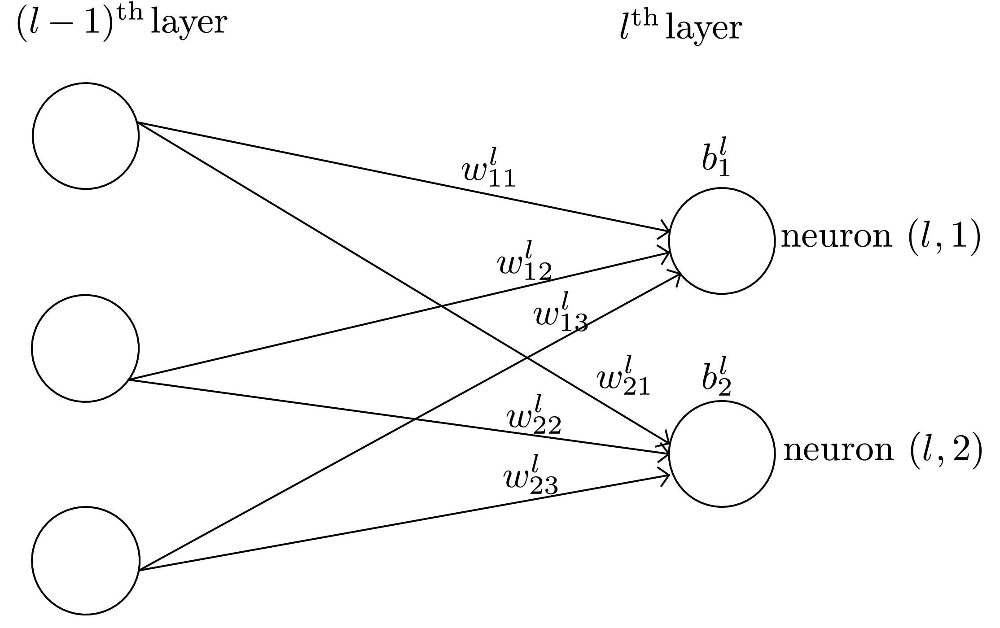 |
We use 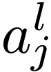 to denote the output (activation) of the neuron in layer. A neural network model assumes that is related to the 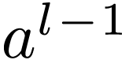 (output of the previous layer) via
| 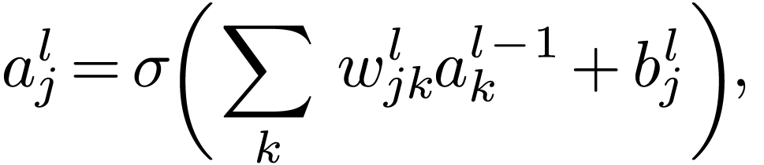 | (1) |
where the summation is over all neurons in the layer and 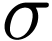 is a function called activation function which can take various forms, e.g., step function,
| 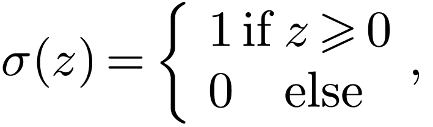 | (2) |
rectified linear unit (ReLU),
| 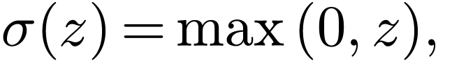 | (3) |
and sigmoid function (“S”-shaped curve, also called logistic function)
| 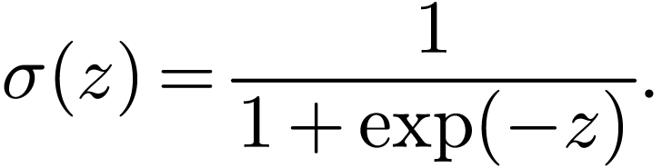 | (4) |
Define 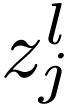 by
| 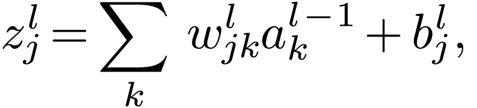 | (5) |
which can be interpreted as an weighted input to the neuron , then Eq. (1) is written as
| 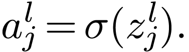 | (6) |
In matrix form, Eq. (5) is written as
| 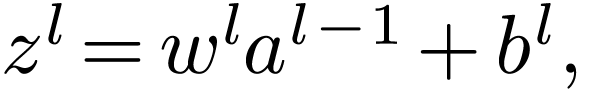 | (7) |
where 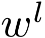 is a 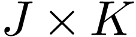 matrix, 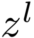 and 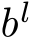 are column vectors of length 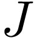, is a column vector of length 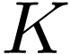, where and are the number of neurons in the layer and layer, respectively.
The input layer is where data inputs are provided, and the output layer is where the final prediction is made. The input and output layers of a deep neural network are called visible layers. The layers between the input layer and output layer are called hidden layers. Note that the input layer is usually not considered as a layer of the network since it does not involve any computation. In tensorflow, layers refer to the computing layers (i.e., hidden layers and the output layer, not including the input layer). The activation function of each layer can be different. The activation function of the output layer is often chosen as None, ReLU, logistic/tanh, and is usually different from those used in the hidden layers. Here “None” means activation 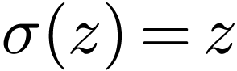.
Define a loss (cost, error) function by
| (8) |
where 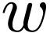 and 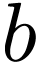 denotes the collection of all weights and biases in the network, 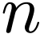 is the total number of training examples 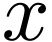, the summation is over all the training examples, 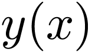 is the desired output from the network (i.e., correct answer) when is the input, and 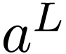 is the actual output from the output layer of the network and is a function of 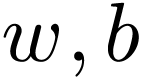, and . Note that 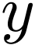 and are vectors (with number of elements being the number of neurons in the output layer) and 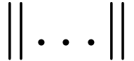 denotes the vector norm. Explicitly writing out the vector norm, Eq. (8) is written as
| 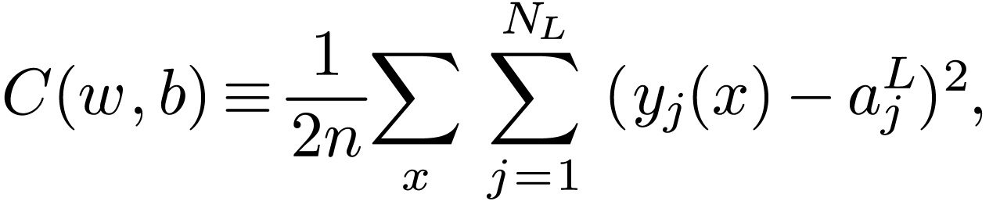 | (9) |
where 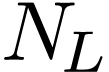 is the number of neurons in the output layer.
The cost function is the average error of the approximate solution away
from the desired exact solution. So the goal of a learning algorithm is
to find weights and biases that minimize the cost function. To minimize
the cost function over 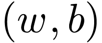 using the gradient
descent method, we need to compute the partial derivatives  and 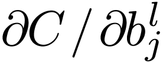. Next we
will discuss how to compute them.
and 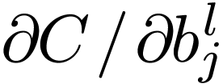. Next we
will discuss how to compute them.
Note that the loss function involves an average over all the training examples. Denote the loss function for a specific training example by 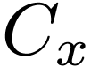, i.e.,
| 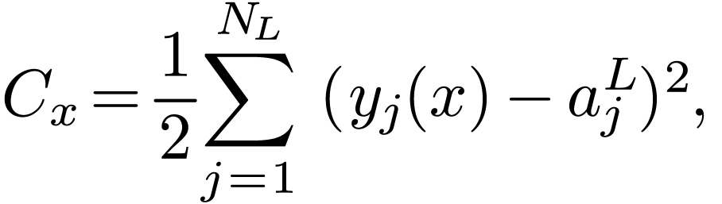 | (10) |
then expression (9) is written as
| 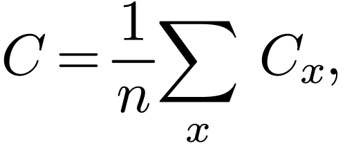 | (11) |
Then the partial derivatives and can be written as the sum of 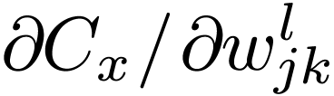 and
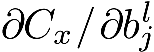, i.e.,
| 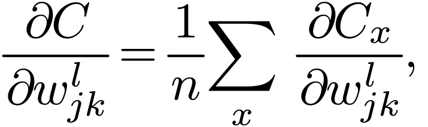 | (12) |
| 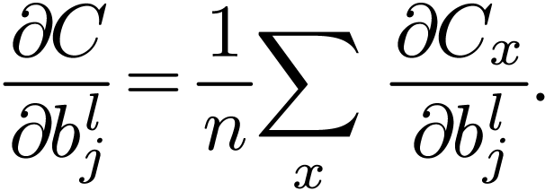 | (13) |
The above formulas indicate that, once and are known, obtaining and
is trivial, i.e., just averaging them.
Therefore, we will focus on (i.e., the cost
function for a fixed training example) and discuss how to compute and .
In practice, we do not sum over all the training examples. Instead, we average the derivative over a small number (say 16) of training examples (a mini batch) and use these approximate derivatives to advance a step. For the next step, we stochastically change to using a different mini batch. This is called stochastic gradient descent (SGD) method.
The cost function is a function of weights and biases of all neurons (the input and output are fixed parameters). For a specific neuron , its weights and biases enter via the combination 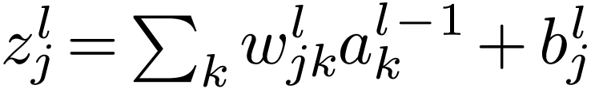. Then it is useful to define the following partial derivative:
| 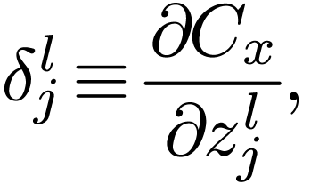 | (14) |
where the partial derivative are taken with fixed weights and biases for all neurons except neuron . Note that the 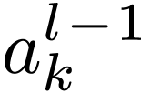 appearing in the expression of does not depend on or . It only depends on the weights and biases in the layers 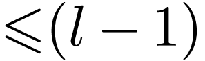, which are all fixed when taking the derivative in expression (14). 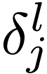 defined in expression (14) is often called the error of neuron .
Using the chain rule, and can be expressed in terms of :
| (15) |
and
| (16) |
Therefore, if is known, it is trivial to compute the gradients needed in the gradient descent method.
For the output layer ( layer), defined in Eq. (14) is written as
| (17) |
The dependence of on is explicitly given by Eq. (10), from which the above expression for is written as
| (18) |
Therefore is easy to compute.
Backpropagation is a way of computing for every layer using recurrence relations: the relation between and . Noting how the error is propagating through the network, we know the following identity:
| (19) |
with
 |
(20) |
i.e.,
| (21) |
Therefore
| (22) |
i.e.,
| (23) |
Equation (23) gives the recurrence relations of computing from . This is called the backpropagation algorithm. Eq. (23) can be written in the matrix form:
| (24) |
where stands for matrix transpose, is the element-wise product.
Ref: http://neuralnetworksanddeeplearning.com/